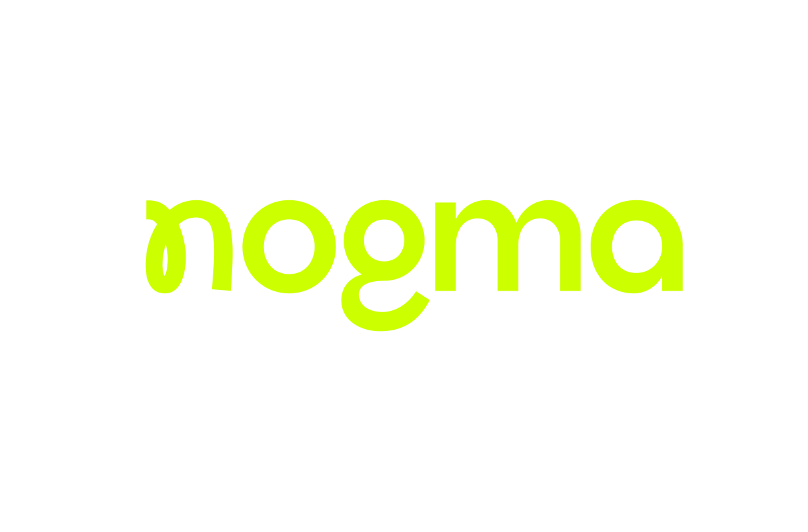

02 / 07O problema real
O difícil não é achar
o que automatizar.
É que tudo parece importante ao mesmo tempo.
E quando tudo parece prioridade,
a escolha acaba sendo por intuição.


02 / 07É que tudo parece importante ao mesmo tempo.
E quando tudo parece prioridade,
a escolha acaba sendo por intuição.